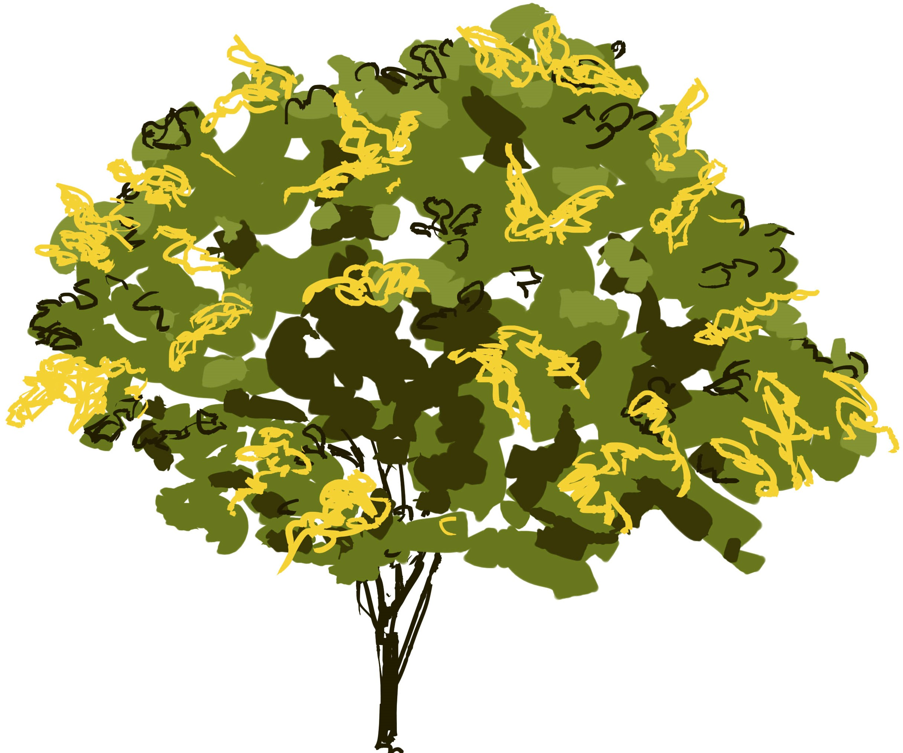

ВОЗНЕСЕНСКИЙ САД - ОДИН ИЗ ДРЕВНЕЙШИХ САДОВ НА ТЕРРИТОРИИ
МОСКВЫ. ОН ЯВЛЯЕТСЯ ЧАСТЬЮ БОЛЬШОГО
ГОСУДАРЕВА САДА В
КОЛОМЕНСКОМ, КОТОРЫЙ НАЗЫВАЛСЯ «СТАРЫМ» И ЗАНИМАЛ ПЛОЩАДЬ 21,8 ГА.
ВОЗНЕСЕНСКИЙ САД НАХОДИТСЯ В ЮГО-ВОСТОЧНОЙ ЧАСТИ УСАДЬБЫ. ЗДЕСЬ И В НАШЕ ВРЕМЯ РАСТЕТ БОЛЕЕ 900 ЯБЛОНЬ.
РЯДОМ РАСПОЛАГАЕТСЯ ЭКСПОЗИЦИЯ «УСАДЬБА ПАСЕЧНИКА» И АПТЕКАРСКИЙ ОГОРОД.
НА ТЕРРИТОРИИ ВОЗНЕСЕНСКОГО САДА СОХРАНИЛИСЬ ДРЕВНЕЙШИЕ КОЛОМЕНСКИЕ ДУБЫ (ВОЗРАСТ ОКОЛО 400 ЛЕТ). В ПРЕДАНИЯХ ЭТИ ДУБЫ НАЗЫВАЮТ «ПЕТРОВСКИМИ». УЖЕ В XVIII В. СУЩЕСТВОВАЛА ЛЕГЕНДА, ЧТО ПОД СЕНЬЮ КОЛОМЕНСКИХ ДУБОВ ОБУЧАЛСЯ ГРАМОТЕ ЦАРЕВИЧ ПЕТР АЛЕКСЕЕВИЧ, БУДУЩИЙ ИМПЕРАТОР ПЕТР ВЕЛИКИЙ.
В ВОЗНЕСЕНСКОМ САДУ, ОДНОМ ИЗ ШЕСТИ САДОВ КОЛОМЕНСКОГО, РОСЛИ НЕ ТОЛЬКО ТРАДИЦИОННЫЕ ДЛЯ СРЕДНЕЙ ПОЛОСЫ РОССИИ ДЕРЕВЬЯ И КУСТАРНИКИ. ЗДЕСЬ ПРИЖИЛИСЬ И КЕДРЫ, ПИХТЫ, ГРЕЦКИЙ ОРЕХ И ДРУГИЕ ДИКОВИННЫЕ РАСТЕНИЯ ИЗ ДРУГИХ КЛИМАТИЧЕСКИХ ЗОН.
ВОЗНЕСЕНСКИЙ САД - ЕСТЕСТВЕННАЯ «ЗЕЛЕНАЯ ЗАЩИТА» ЛАНДШАФТА МУЗЕЯ-ЗАПОВЕДНИКА ОТ ПРОНИКНОВЕНИЯ НА ТЕРРИТОРИЮ ВЫХЛОПНЫХ ГАЗОВ. В 1999 - 2000 ГГ. В САДУ БЫЛИ ПРОЛОЖЕНЫ ГРАВИЙНЫЕ ДОРОЖКИ, СДЕЛАН ГАЗОН ПОД КРОНАМИ ЯБЛОНЬ, УСТАНОВЛЕНЫ ФОНАРИ ОСВЕЩЕНИЯ.
ЗДЕСЬ ЖЕ НАХОДИТСЯ ДЕЙСТВУЮЩАЯ ПАСЕКА, И В ЛЕТНЕЕ ВРЕМЯ ПРОВОДЯТСЯ ЭКСКУРСИИ С ДЕМОНСТРАЦИЕЙ УСТРОЙСТВА УЛЬЯ И РАССКАЗОМ О ПЧЕЛОВОДСТВЕ.
ВБЛИЗИ ВОЗНЕСЕНСКОГО САДА ПРЕДСТАВЛЕНА СВОЕОБРАЗНАЯ ЭКСПОЗИЦИЯ - АПТЕКАРСКИЙ ОГОРОД КАК НЕПРЕМЕННЫЙ ЭЛЕМЕНТ САДОВОДСТВА XVII В. ЗДЕСЬ ВЫРАЩИВАЮТСЯ РАЗНООБРАЗНЫЕ ЛЕКАРСТВЕННЫЕ ТРАВЫ.
ДАННЫЙ САД – ЛЮБИМОЕ МЕСТО ПРОГУЛОК МОСКВИЧЕЙ, ЗДЕСЬ МОЖНО ОТДОХНУТЬ, ПОЛЕЖАТЬ НА ТРАВЕ, ПОЧИТАТЬ КНИГУ ИЛИ ПРОСТО ПОДЫШАТЬ ПРЕКРАСНЫМ ВОЗДУХОМ, НАСЫЩЕННЫМ АРОМАТОМ ТРАВ